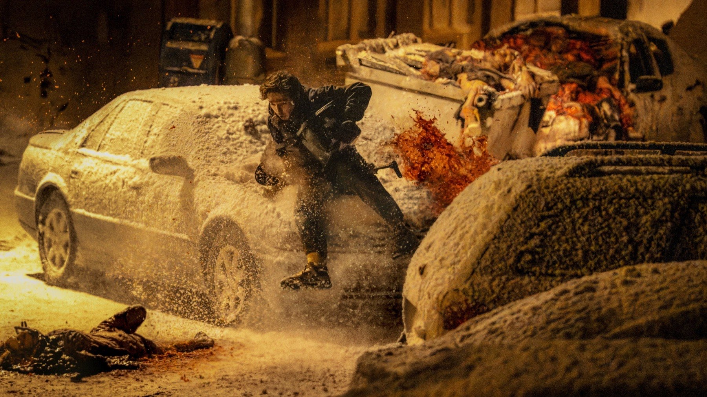
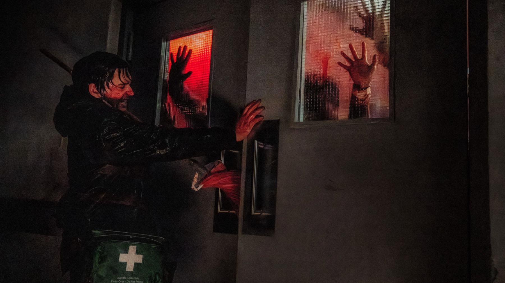

Resident Evil di Zach Cregger: 7 curiosità
Un regista che non aveva mai visto i vecchi film, battute tagliate perché faceva troppo ridere e un record su Rotten Tomatoes
Per vent'anni Resident Evil al cinema ha voluto dire Milla Jovovich, ralenti e pallottole. Poi è arrivato Zach Cregger, l'autore di Barbarian e Weapons, e ha ribaltato tutto: niente eroi patinati, un corriere sanitario qualunque spedito a Raccoon City nella notte sbagliata e un ritorno dichiarato al survival horror dei videogiochi. Risultato? Il miglior debutto nella storia del franchise e il film tratto da un videogioco con le recensioni migliori di sempre. In sala in Italia dal 17 settembre con Eagle Pictures, ecco sette cose da sapere prima di vederlo.
Non aveva mai visto i vecchi film
Sembra una battuta, ma è tutto vero. In un'intervista al Guardian, Cregger ha ammesso di non aver mai visto nessuno dei precedenti film di Resident Evil. Il motivo? Da grande fan dei videogiochi, ha spiegato che quei film non gli sembravano somigliare ai giochi né avere l'aspetto di veri horror. La sua linea è stata chiara fin dall'inizio: puntare ai videogiochi, non a Matrix.
Una storia parallela a Resident Evil 2
Il film non adatta la trama di nessun capitolo, ma si ispira soprattutto a Resident Evil 2, 3 e 4. Cregger ha costruito una storia originale che si svolge alla periferia degli eventi di Resident Evil 2, in parallelo all'epidemia di Raccoon City. Niente Leon, niente Claire: «non racconterò la storia di Leon, perché la raccontano già i giochi», ha detto all'Hollywood Reporter. Il protagonista è Bryan, corriere medico che deve consegnare un pacco all'ospedale della città proprio mentre esplode il contagio.

Un'asta tra quattro studios
Il progetto era così ambito che, all'inizio del 2025, quattro studios si sono contesi i diritti di distribuzione, tra cui Warner Bros. e Netflix. A spuntarla, a marzo, è stata Sony, che aveva già distribuito i film precedenti, con Columbia Pictures a supervisionare la produzione. La data di uscita americana, il 18 settembre 2026, è stata fissata subito dopo.
«Niente gente bella»
Per il protagonista Cregger ha scelto Austin Abrams, già nel cast di Weapons. Ma lo ha voluto diverso da come lo conosciamo: «Non voglio gente bella, senza offesa. Lui è uno schianto, lo abbiamo imbruttito», ha raccontato a Entertainment Tonight. Non voleva personaggi sexy, ma sporchi e terrorizzati: l'esatto contrario dell'estetica patinata dell'era Jovovich.

Faceva troppo ridere
Chi conosce Barbarian sa quanto Cregger ami mescolare orrore e commedia. Questa volta, però, ha esagerato. Durante le proiezioni di prova il pubblico ha apprezzato il film, ma lo ha trovato troppo divertente. Nessuna imposizione dello studio: è stato Cregger stesso, proiezione dopo proiezione, a eliminare quante più battute possibile e, ha spiegato all'Hollywood Reporter, non solo il pubblico ha gradito di più il film, ma anche lui lo ha amato di più: «Un po' di umorismo fa molta strada in un horror, e non c'è una sola battuta tagliata di cui senta la mancanza».
Un debutto da record
Negli Stati Uniti Resident Evil ha incassato 60 milioni di dollari nel primo weekend, 108 milioni nel mondo: il miglior esordio di sempre per la saga, che ha battuto il precedente record di Resident Evil: Retribution. Merito anche delle anteprime del giovedì, le più ricche nella storia del franchise.
Il videogame movie più amato dalla critica
La vera sorpresa, però, è la critica. Con il 96% di recensioni positive su Rotten Tomatoes e un punteggio di 79 su Metacritic, Resident Evil è diventato il film tratto da un videogioco con le valutazioni più alte di sempre su entrambi gli aggregatori. Su Rotten Tomatoes il primo giro di recensioni lo descriveva non solo come il miglior Resident Evil, ma come uno dei migliori adattamenti videoludici mai realizzati.
Un regista che non aveva visto i film precedenti, un protagonista volutamente imbruttito e una manciata di battute sacrificate: forse il segreto di questo Resident Evil è proprio aver dimenticato tutto quello che c'era prima. Voi lo avete già visto?
Domande frequenti
Quando esce Resident Evil di Zach Cregger in Italia?
È nelle sale italiane dal 17 settembre 2026, distribuito da Eagle Pictures.
Chi è il protagonista del nuovo Resident Evil?
Austin Abrams interpreta Bryan, un corriere medico che arriva a Raccoon City durante l’epidemia.
A quale videogioco si ispira il film?
Soprattutto a Resident Evil 2, 3 e 4, con una storia originale che si svolge in parallelo agli eventi di Resident Evil 2.
Fonti consultate (14)
- Wikipedia – Resident Evil (2026 film)
- Far Out – Zach Cregger admits he's never seen a Resident Evil movie
- Collider – Cregger never watched a Resident Evil movie
- Screen Rant – Why Cregger has never seen a Resident Evil movie
- Anime News Network – Warner Bros., Netflix bid for Resident Evil
- World of Reel – Sony acquires Cregger's Resident Evil
- CinemaBlend – Cregger's literal 'hot' take
- ComicBasics – Cregger didn't want 'hot people'
- The Hollywood Reporter – Cregger on test screenings
- Kotaku – Cregger stripped out jokes
- Variety – Resident Evil box office opening
- Bloody Disgusting – $60 million opening
- Rotten Tomatoes – Resident Evil first reviews
- MYmovies – Resident Evil (2026)